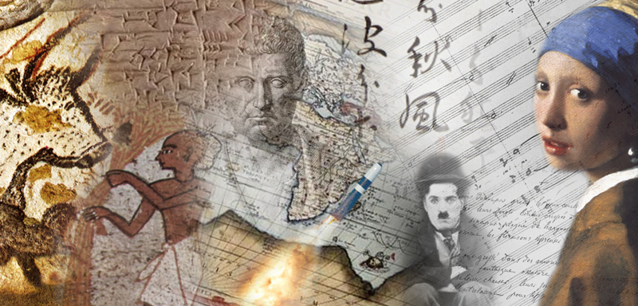

Культура та мистецтво
В буденному вживанні поняття “мистецтво” та “культура” є тотожними. Проте поняття “культура” є більш об’ємним, ніж поняття “мистецтво”. Воно містить у собі всю систему мистецтв у цілому та кожен їх вид окремо, сам процес створення витворів мистецтва протягом багатьох століть, процес сприйняття мистецтва, спеціалізовані інститути культури (театри, музеї, концертні зали), в яких здійснюється зберігання та трансляція художніх цінностей… Постійно збагачуючи суспільство новими художніми творами, мистецтво створює “предметну основу” художньої культури. Скільки-небудь суттєві зрушення в розвитку мистецтва справляють (прямо чи опосередковано, відразу або з часом) вплив на все художнє життя суспільства. Мистецтво формує такі якості людини, як уява, творчий підхід до життя. Завдяки мистецтву, людина може зрозуміти, усвідомити те, що не в змозі отримати за допомогою власного життєвого досвіду, оскільки через соціально-просторову та соціально-часову зумовленість досвід окремої людини завжди обмежений. Сила мистецтва в його цілісному впливі на людину, що пояснюється образною природою художніх витворів. Мистецтво через емоції та переживання змушує задуматися над тим, щоб не просто “розумно”, але й критично ставитися до дійсності. Всю цю складну систему буття мистецтва в художній та духовній культурі вивчають спеціальні дисципліни – мистецтвознавство та естетика, що пропонують матеріал для культурологічного аналізу. У процесі свого історичного розвитку буття мистецтво виявляє себе як рухливий та гнучкий організм, який виявляє нові творчі грані та аспекти й миттєво вбирає в себе (й передвіщає) ледь помітні зміни в соціальній психології, стереотипах мислення, ієрархії цінностей. На кожному витворі мистецтва – великому чи просто талановитому, лежить відбиток часу. Воно завжди є дитям своєї епохи, продуктом її глибинного розвитку та певної духовної атмосфери. Великі твори мистецтва долають тяжіння свого часу, стають надбанням наступних поколінь. Це можливо завдяки тому, що справжні шедеври мистецтва, які уособлюють його безкінечне сходження, у історично- часовому осягають загальнолюдське, а в минулому “фіксують” вічне. У такий спосіб вони ніби піднімаються над своєю епохою, над тими соціальними умовами та потребами, які були покликані до життя, й включаються в загальнолюдський фонд художньої культури.
29.04.2023